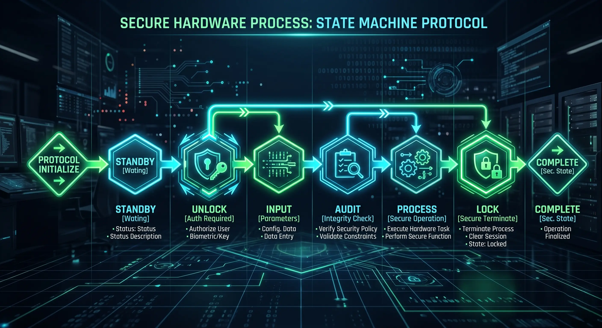
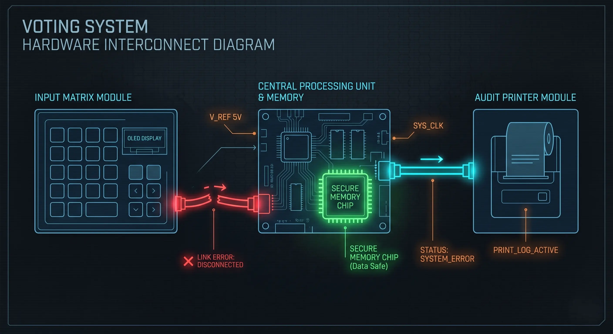
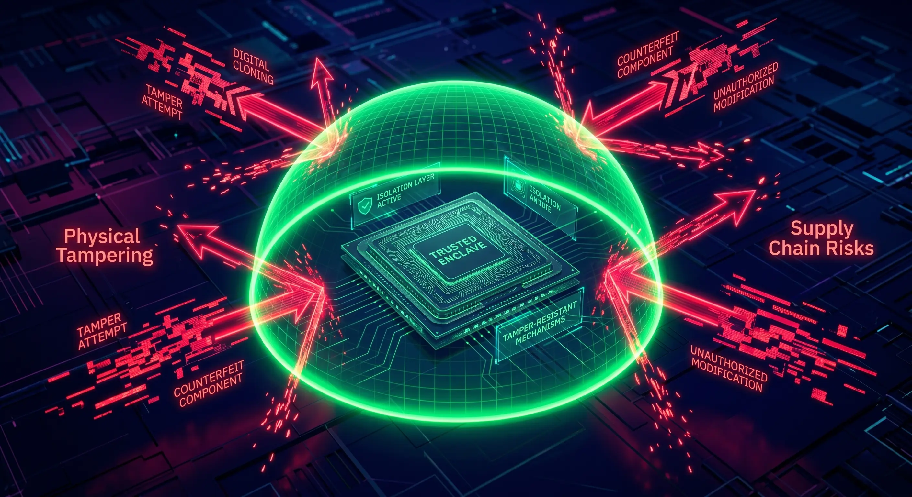

When engineering a system to handle over 900 million users in a single deployment phase, the constraints are severe. The Indian electoral process requires a system that is highly scalable, power-efficient, tamper-evident, and operable by people with varying levels of technical literacy.
Before Electronic Voting Machines (EVMs), India relied on paper ballots. That system suffered from logistical bottlenecks, high rates of invalid votes, and physical vulnerabilities like "booth capturing." EVMs were introduced not as a technological novelty, but as an engineering solution to these specific operational problems.
This post breaks down the Indian EVM from a systems design perspective—looking at its architecture, security features, threat model, and technical limitations.
Contents
History and Governance
EVMs are not a recent addition to Indian elections. The machines were first conceived in 1977 and made their debut in 1982 during a by-election in the Parur assembly constituency in Kerala. They were developed collaboratively by the Election Commission of India (ECI) alongside two state-owned public sector units: Bharat Electronics Limited (BEL) and Electronics Corporation of India Limited (ECIL).
The deployment and control of EVMs are managed exclusively by the ECI, an autonomous constitutional authority. To prevent systemic bias or manipulation, a strict separation of concerns is maintained:
- Manufacturing vs. Deployment: While EVMs are built by BEL and ECIL, the manufacturers have no role in their election deployment. The ECI completely controls the logistics, storage, and operation.
- Two-Stage Randomization: Machines are not pre-assigned to specific polling booths from the factory. They undergo a software-driven randomization process to allocate them first to constituencies, and later to specific polling stations at the very last minute. This makes targeted hardware attacks logistically improbable.
- Chain of Custody: When not in use, machines are stored in highly secure, 24/7 CCTV-monitored strong rooms guarded by central paramilitary forces, with access requiring multi-party authorization.
System Architecture
At its core, the EVM is a distributed embedded system consisting of three primary hardware components, all running on standard battery packs to ensure availability in areas without reliable electricity.
- Ballot Unit (BU): This is the user interface. It contains a matrix of buttons alongside LEDs and candidate information. It has no processing logic for vote tabulation; it merely registers a physical input and sends a signal.
- Control Unit (CU): The "brain" of the system, operated by the presiding officer. It stores the vote tally, controls the state of the BU, and houses the primary microcontroller.
- VVPAT (Voter Verifiable Paper Audit Trail): A printer unit placed alongside the BU that provides a physical, independent audit trail of the electronic vote.
From a networking standpoint, the EVM is strictly air-gapped. Communication between the BU, VVPAT, and CU happens via wired serial connections. The protocol is heavily constrained—the BU cannot initiate a vote transaction unless the CU explicitly sends a "ready" signal.
Additionally, the entire system is powered by standard alkaline battery packs rather than direct AC power. This is a deliberate design choice to prevent power-line communication attacks, where malicious signals might be injected through the power grid. It also ensures the machines remain 100% operational in remote areas without reliable electricity.
How Voting Works (State Machine Flow)
Before voting even begins, the system goes through a rigorous initialization phase. This includes the First Level Check (FLC) months before the election, where engineers verify the hardware, and the Candidate Setting phase, where a specialized Symbol Loading Unit (SLU) uploads candidate details to the VVPAT under strict supervision.
The voting process operates as a strict state machine to prevent double voting and race conditions.
- Authentication: The voter's identity is manually verified against the electoral roll by poll workers.
- System Unlock: The presiding officer presses the "Ballot" button on the Control Unit. This changes the state of the CU and sends a signal to the BU to accept exactly one input.
- Input Registration: The voter presses a button on the BU. An LED glows, and the input is sent to the VVPAT and CU.
- Physical Audit: The VVPAT prints a slip containing the candidate's serial number, name, and symbol. The slip is visible behind a transparent window for 7 seconds before cutting and dropping into a sealed drop box.
- Storage and Lock: The CU records the vote in its internal EEPROM (Electrically Erasable Programmable Read-Only Memory). A loud beep sounds, and the BU is instantly locked, ignoring any further inputs until the presiding officer resets the state for the next voter.

Security Design
The security of the EVM relies heavily on hardware constraints and procedural protocols rather than complex software cryptography.
- No Network Interfaces: The PCBs (Printed Circuit Boards) inside the EVMs do not possess any radio frequency (RF) receivers, Wi-Fi, or Bluetooth modules. It is a physically isolated system.
- Firmware Constraints: The software running on the EVMs is burnt into One Time Programmable (OTP) microcontrollers. Once written at the manufacturing facility (BEL or ECIL), the code cannot be rewritten, modified, or updated.
- Dynamic Coding of Key Presses: When a button is pressed on the BU, it doesn't simply send a static electrical signal to the CU. It sends a dynamically coded payload. This prevents an attacker from hooking a hidden micro-device into the cable to inject fake vote signals.
- Real-Time Clock (RTC) and Timestamps: The CU contains an internal real-time clock. Every key press and event (like turning the machine on or off) is timestamped and logged. If an attacker tries to operate the machine at night or during transit, the time-stamped audit trail will expose the unauthorized activity.
- Physical Tamper Evidence: Every port, button, and casing seam is sealed with wax and specialized tags signed by political representatives before polling begins.
- The Mock Poll: Before actual voting starts, a "mock poll" of at least 50 votes is conducted in front of polling agents. The electronic results are tallied against the printed VVPAT slips. Once verified, the machine's memory is cleared, and the actual poll begins.
Fault Tolerance and Error Recovery
In distributed systems, hardware failure is treated as an inevitability rather than an exception. When deploying over a million machines in diverse environments—from humid coastal regions to freezing high-altitude booths—the EVM architecture must account for component degradation.
The system is designed with modular fault tolerance. Because the vote tally is permanently stored in the Control Unit's non-volatile EEPROM, the peripheral devices can fail without compromising the overall election integrity.
- Peripheral Failure: If a Ballot Unit (BU) or VVPAT printer jams, drops its connection, or suffers a hardware fault during polling, the presiding officer can replace the specific unit. The CU retains the overall state, and polling resumes seamlessly.
- Control Unit Failure: If the CU itself suffers a catastrophic failure (e.g., severe physical damage or battery terminal corrosion), it cannot be swapped mid-poll without risking data discrepancies. In such edge cases, strict procedural protocols dictate a complete replacement of the entire EVM set and, frequently, a repoll for that specific booth, as the continuous integrity of the state machine has been broken.

Threat Model
When evaluating any secure system, we have to look at the threat model. Where are the vulnerabilities?
- Physical Tampering: An attacker gains physical access to the machine and attempts to swap the microcontroller or alter the wiring. Mitigation: Physical seals, strict chain of custody, and randomized allocation of machines to constituencies at the last minute.
- Insider Threats: Malicious actors at the manufacturing level attempting to burn rogue firmware into the OTP chips. Mitigation: Code audits by independent technical committees; however, the reliance on trusted manufacturers remains a single point of failure in the supply chain.
- Procedural Vulnerabilities: The system assumes poll workers follow the exact protocol. If a presiding officer fails to clear the mock poll data before starting the actual poll, the integrity of the specific machine's tally is compromised.

The VVPAT System
Introduced to solve the "black box" problem of purely electronic voting, the VVPAT acts as an independent hardware verification layer.
The VVPAT operates as a slave to the Control Unit. When a vote is cast, the CU instructs the VVPAT to print the corresponding slip. The slip is visible behind a transparent, scratch-resistant window for exactly 7 seconds. A continuous light sensor monitors the paper path; if the paper jams or someone tries to block the viewport, the machine immediately goes into a locked error state.
If the electronic memory in the Control Unit is corrupted or disputed, the paper slips in the VVPAT drop box serve as the ground truth. However, the system has operational limits. Currently, the Election Commission randomly samples and counts the VVPAT slips of only a small percentage of polling stations per constituency.
While statistical sampling is a valid mathematical approach to detect widespread anomalies, a discrepancy in a highly contested, narrow-margin election often leads to demands for 100% VVPAT counting—which essentially negates the speed advantage of electronic tabulation.
Another engineering limitation lies in the paper itself. The VVPAT uses thermal paper, which is fast and requires no ink cartridges. However, thermal prints fade over time, especially in hot and humid Indian climates. The law requires election data to be preserved for a set period in case of legal disputes, making the chemical composition and storage of these printed slips a critical logistical challenge.
Common Myths vs Reality
Because election infrastructure is highly scrutinized, technical realities are often clouded by misinformation.
- Myth: EVMs can be hacked remotely.
Reality: To hack a system remotely, there must be an attack surface (a network interface). EVMs do not have wireless modules, making remote interception impossible. - Myth: Pressing any button routes the vote to a specific candidate.
Reality: This implies a software-level Trojan. The mandatory pre-poll mock test, where representatives manually verify inputs against the VVPAT output, is designed to catch exactly this type of mapping error or malicious code.
Limitations of the System
No engineering system is flawless. The Indian EVM architecture has distinct trade-offs:
- Dependency on Process: The technological security of the EVM is entirely dependent on human procedures. If the chain of custody is broken, or physical seals are ignored, the hardware cannot defend itself.
- Lack of Cryptographic Verifiability: Unlike End-to-End (E2E) verifiable voting systems that use cryptography to allow voters to mathematically verify their vote was counted, Indian EVMs rely on institutional trust. Voters must trust that the machine recorded what the VVPAT printed.
- Scalability of Audits: In the event of a nationwide dispute, manually counting hundreds of millions of VVPAT slips would take weeks, reintroducing the human error and logistical nightmares the EVMs were designed to eliminate.
- Proprietary Design: The firmware and hardware schematics are proprietary and not open-source. Security relies heavily on independent committees rather than open public audits.
Conclusion
From a systems engineering perspective, the Indian Electronic Voting Machine is an elegant solution to a massive logistical problem. By keeping the hardware simple, air-gapped, and state-driven, it eliminates vast categories of digital cyber threats.
However, security is not just a piece of hardware; it is the entire protocol surrounding it. The EVM is a sociotechnical system. Its integrity relies just as much on the wax seals, randomized dispatch algorithms, and the vigilance of local poll workers as it does on the microcontrollers inside the plastic casing.
Disclaimer: This article was written and edited by Pranav R. AI tools were used for assistance with drafting and visual assets. This post is an independent technical analysis of publicly available information regarding the EVM architecture. It does not reflect any political opinions or affiliations.